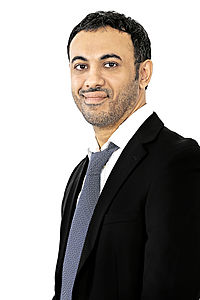

Qais Al Khonji is an Omani businessman and entrepreneur. He is the founder of Qais United Enterprises Tradingand Genesis International.He serves as a board member for many Omani companies and is known for assisting Omani citizenswith overcoming the hurdles of starting small businesses in the country.
He is also the co-owner and CEO of Genesis International, a medical education company based in Oman
He was born in Muscat, Oman. Al Khonji is married with two kids: Ziena and Mahmoud.[citation needed]
Qais Al-Khonji graduated from Atlantic College in Wales in 1998, obtaining his International Baccalaureate Diploma. Following his graduation, he moved to Leicester, England that same year and finished his bachelor's degree in business information systems in De Montfort University.
In 2010, Qais decided to begin his own business, Qais United, which was a simple trading company that bought goods from China and sold them to individuals.
In the year 2012, Qais established his second company (Genesis International), which is currently providing IT solutions, in addition to trying to implement the so-called (Smart City), which should facilitate electronic payment of bills for water and electricity within a certain population range. The company is now seeking to try to apply this system in the Omani capital Muscat and some parts of India.
In 2013, Qais established a successful enhanced oil recovery business called Genesis Projects and Investments LLC - EOR Lab Services and he is currently running it.[10]
Also, Al-Khonji is a board member of Oman Fisheries since 2006, a board member of Oman National Engineering & Investment CO. since 2009, a board member of Sharakahwhich specifically encourages and supports the development of entrepreneurs and SMEs in the Oman since 2011. Qais is also a board member of Muscat National Holding since 2013.
He has also been recognized by his government as a representative of the country and was appointed as a member of the Entrepreneurs' Organization to meet with former Indian President Dr. A.P.J. Abdul Kalam to discuss Indian-Omani business relations.
In 2015, he was chosen as Business Worldwide Magazine's 'Social Entrepreneur of the Year' for Oman